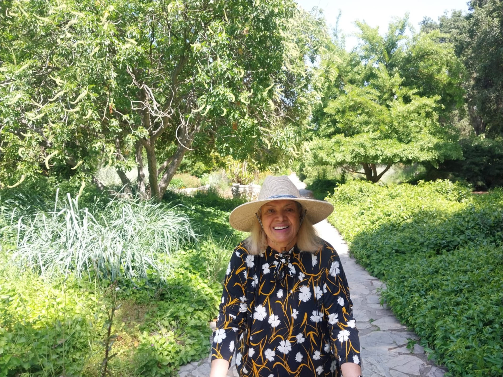

Educational support
Provide scholarships, tools, and assistance that help students and emerging learners continue their education with confidence and hope.
The Maryam Mottaghi Foundation was established to carry forward the spirit of a woman whose life was marked by selflessness, faith, resilience, and devotion to others. Through educational support, compassionate outreach, and programs rooted in dignity and hope, the foundation seeks to uplift lives in her honor.
Inspired by Maryam Mottaghi’s life of sacrifice and love, the foundation is dedicated to supporting individuals facing barriers to education, stability, and opportunity. Our work is guided by service, integrity, and the belief that every human being deserves encouragement, dignity, and the chance to flourish.
Provide scholarships, tools, and assistance that help students and emerging learners continue their education with confidence and hope.
Create pathways for guidance, belonging, and practical support for those navigating personal, educational, professional, or financial barriers.
Honor a life of devotion and sacrifice by advancing compassionate work that reflects her generosity, humility, and faith.
Maryam Mottaghi was a woman of deep faith, extraordinary tenderness, and quiet strength. She devoted her life to her family and to the well-being of others, carrying burdens with grace and offering love without condition. This foundation exists not only in her memory, but in continuity with the values she lived every day.

Maryam’s life was defined by sacrifice, service, and an unwavering capacity to love. She uplifted others even through hardship, and her presence brought comfort, warmth, and dignity wherever she went. The foundation was created so that her light would continue to reach people she never had the chance to meet.
In honoring her, we hope to support those who need practical help, encouragement, and access to opportunity — especially in educational settings where one act of support can change the course of a life.
Maryam’s story is one of brilliance and resilience: a self-taught artist and teacher, a student and professional, a mother who rebuilt life across countries, and a devoted Bahá’í whose home and heart remained open to those in need.
Maryam Mottaghi entered the world on December 8, 1946, in Yazd, Iran, to Sayed Yahya Mottaghi and Zahra Mottaghi. Within her family constellation were two elder sisters, Bibi Rohbarb and Ashraf, along with a younger brother named Mohammad Agha. Although they all belonged to the Sayed lineage, Maryam, her parents, and her eldest sister embraced the Bahá’í faith.
From a young age, Maryam exhibited a natural curiosity and a profound desire to learn, teach, assist, and contribute to the well-being of those around her — be it friends, family, community members, or neighbors. Her thirst for knowledge was evident early on, as she eagerly delved into books, teaching herself until she had the opportunity to attend formal schooling.
Maryam possessed a remarkable talent for sewing and fashion, entirely self-taught and hailed as a prodigy in her craft. Without the aid of patterns or formal training, her extraordinary skill transcended mere replication; she could effortlessly and flawlessly recreate designs simply by sight, often enhancing them to surpass the original, all without the need for measurements or guides.
Driven by her compassionate and generous spirit, Maryam bestowed her handmade creations upon family, friends, and even neighbors facing hardships. After completing high school, she established a government-recognized and accredited fashion institute. Taking on the roles of administrator, instructor, and diploma provider, she guided her students through rigorous training, ensuring their successful graduation. Upon completion, she diligently processed their diplomas, sending them to the state for official acknowledgment and endorsement.
Amidst her commitments, Maryam pursued dual degrees in Meteorology and Business Management at the University of Tehran. Following graduation, she made the decision to sell her esteemed fashion institute and transitioned into a role as a meteorologist at Mehrabad International Airport. In a testament to her versatility, she soon expanded her responsibilities to include work in the airport’s Human Resources department, seamlessly balancing both meteorology and HR duties. Throughout her career, Maryam was revered for her expertise, cherished for her warmth, and deeply respected by all who knew her.
Following her marriage to Jamshid Taefi, Maryam played a pivotal role in their journey together. While providing unwavering support for their livelihood, she also encouraged Jamshid to pursue higher education. Thanks to her steadfast encouragement, Jamshid obtained a degree in accounting, eventually securing a position with the government in this field.
In the tumultuous aftermath of the revolution, Bahá’ís faced escalating persecution, enduring loss of livelihoods, resources, and even lives. When Maryam found herself among those who lost their jobs, her primary concern became supporting her family. Returning to her roots in sewing, she embarked on a journey of resilience, single-mindedly providing for her loved ones. Additionally, Maryam played a pivotal role in securing employment for Jamshid within her family’s network, demonstrating her unwavering determination and resourcefulness as they navigated through adversity together.
Maryam is the proud mother of two children, Arash and Azadeh. Before the revolution, Arash was already attending school. However, when it was time for Azadeh to enroll in kindergarten after the revolution, Maryam faced formidable challenges. Despite her tireless efforts to secure Azadeh’s enrollment, every application form posed the same obstacle: it required disclosure of the child’s religion. Upon revealing their Bahá’í faith, they were unjustly denied admission and instructed to leave, leaving Maryam grappling with discrimination and the denial of her daughter’s right to education.
Recognizing the bleak prospects for her children’s future in Iran, Maryam made a bold and selfless choice: to forsake everything and everyone she knew, all in pursuit of a better life for her young family. She took decisive action, liquidating her possessions and parting with cherished jewelry to finance their escape from Iran, determined to provide her children with the opportunity for a brighter future elsewhere.
Maryam’s unwavering courage and resilience were the bedrock upon which her family relied. Throughout their lives, her indomitable spirit served as a guiding light, particularly during their perilous escape. Despite the daunting and intense nature of their journey, Maryam remained a beacon of strength, comforting her loved ones and reframing their ordeal as an adventure rather than a dire necessity for survival. Her fearless demeanor and unwavering optimism helped carry them through the darkest of times.


Over the course of four days and five nights, Maryam and her family trailed behind smugglers on their arduous journey from Iran to the border of Pakistan. Amidst the challenges of the trip, when the smugglers attempted to extort more money, Maryam demonstrated remarkable courage. Fearlessly confronting the smugglers, she refused to yield, insisting they return to retrieve her husband and daughter, who had been left behind during the previous rest period. Her resolute determination ensured the safety and unity of her family amidst the perilous passage.
Upon their arrival in Pakistan, Maryam wasted no time in taking action. With the funds she had managed to save through her sacrifices, she secured a home for her family and immediately began sewing to provide for their basic needs. Despite the demands of earning a living, Maryam also took on the responsibility of homeschooling her son and daughter. In addition to these duties, she remained actively engaged in Bahá’í activities at the Lahore Bahá’í Center, offering her assistance and support to fellow Bahá’ís, especially the young ones in need. Maryam’s unwavering dedication to her family and community showcased her remarkable strength and resilience.
Maryam’s nurturing instinct extended beyond her immediate family. She frequently assumed a maternal role for young adults in her community, offering care and support, especially during times of illness or hardship. Without hesitation, she opened her home to those in need, providing comfort and assistance to individuals who were unable to care for themselves after serious illnesses. Maryam’s unwavering devotion to serving others exemplified the essence of true Bahá’í faith, reflecting her boundless love and selflessness as a servant of the divine.
In 1987, after 14 months of relentless sacrifice, their perseverance paid off when they finally received sponsorship to immigrate to America. Within days of their arrival, Maryam wasted no time in securing multiple jobs to provide for her family. Not content to settle, she also enrolled herself in night school, driven to enhance her communication skills and kickstart her career in her new home, all while continuing to shoulder the sole responsibility of supporting her family. Her unwavering determination and work ethic were evident as she embarked on this new chapter of her life in America.


During her quest to find a fashion institute in Pasadena, Maryam found herself intrigued by signs advertising computer classes, she decided to explore further. Before she knew it, she had enrolled herself in Pasadena City College. Instead of opting for the known and familiar, Maryam chose to challenge herself and embark on a completely new career path. While enrolled in computer science courses, she simultaneously supported both herself and her family by working in the college’s Human Resources department. Her willingness to embrace change and her dedication to self-improvement were evident as she navigated this new chapter in her life.
After a period of time, Maryam transferred to California State University, Los Angeles, where she continued her studies in both Computer Information Systems and Technology. In 1998, she achieved a significant milestone by graduating from California State University, Los Angeles, with a double degree. Shortly thereafter, she embarked on a new chapter in her career by transitioning into a teaching role, sharing her expertise in the very courses she had once taken herself.
Maryam dedicated herself to academia as a professor at the university until a significant event changed her course. Upon the birth of her granddaughter and her son’s relocation to California, she made the selfless decision to prioritize family. With her son’s young family moving in with her, Maryam wholeheartedly devoted herself to their care. Sacrificing her career, she became the sole provider and caregiver for her granddaughter, ensuring her well-being and nurturing her development. Maryam’s tireless efforts bore fruit as her granddaughter flourished, achieving accolades in high school and later in college, a testament to Maryam’s unwavering love and support.
Amidst her busy and fulfilling life, Maryam remained steadfast in her devotion to the teachings of Bahá’u’lláh. Without falter, she hosted Bahá’í deepening classes in her home every week, while also serving on the Local Spiritual Assembly and offering support to other communities and firesides. As the years progressed and Ruhi classes were introduced, Maryam enthusiastically opened her home to host each book study session and every assembly gathering and feast. Her commitment to her faith never wavered, and she remained a proud and active Bahá’í until the very end of her life.
Maryam’s compassionate spirit endeared her to many, and she was a source of love and support for all who crossed her path. Whether it was family, friends, neighbors, or coworkers facing hardships, they could always rely on her unwavering love and prayers. Maryam selflessly recited 500 “Is there any remover of difficulty?” prayer for each person in need, fervently praying for their healing, success, or thriving, depending on their specific needs. Her generosity of spirit and boundless love infused each prayer, offered willingly and with a heart brimming with compassion and vitality.
Just as Maryam reached a point in her life where she could finally take a well-deserved rest and focus on her own well-being, her health began to decline. The accumulated stresses and sacrifices of a lifetime caught up with her, taking a toll on her physical well-being.
As Maryam’s health declined, she received the devastating diagnosis of pancreatic cancer, which had already spread to her liver, lungs, intestines, and kidneys. Despite her courageous and unwavering fight, she eventually succumbed to the illness, departing for the Abha Kingdom on May 15, 2024. Her departure left countless hearts shattered, but she now rests in the embrace of the Almighty, surrounded by His grace and at peace.
Maryam Mottaghi lived her life with grace, passion, courage, fierce determination, deep love, and abiding dedication to others, and gave of herself joyfully, with the love of God written in her heart. May God perpetually safeguard this angel, granting her eternal happiness, health, and peace in the celestial paradise she now calls home.
A small collection of images honoring Maryam’s joy, faith, family, and love of natural beauty. This gallery can continue to grow over time.
 Maryam in the garden
Maryam in the garden



The Maryam Mottaghi Foundation is in its early stages. As it grows, it seeks to build meaningful, carefully stewarded programs led by highly regarded, trained, skilled, experienced, established, and recognized professionals in their fields and communities.
Inspired by Maryam’s extraordinary gift for fashion, this program will teach students the full creative journey from idea to finished garment: design concept, sketching, drafting, pattern creation, cutting, sewing, refinement, and presentation. The goal is to give learners not only practical skill, but the confidence to create beauty with their own hands.
Maryam rebuilt her career through technology, and this program honors that courage by helping others enter the modern workforce. Participants may receive guidance in computers, coding, programming, cybersecurity, automation, engineering pathways, and practical digital skills needed for meaningful careers in technology.
No student or adult learner should have to navigate opportunity alone. This program will support junior high students preparing for high school, high school students applying to college, and adults returning to education or seeking advancement. Through mentorship and resource navigation, the foundation seeks to make the path forward less frightening and more possible.
Maryam’s cooking was an expression of love, generosity, patience, and welcome. This program will offer professional cooking lessons taught by skilled chefs, helping participants learn technique, discipline, creativity, and the deeper joy of feeding others with care.
Maryam loved books, storytelling, and expression. This program will guide individuals in shaping memories, imagination, and lived experience into written work — from short stories to personal narratives — with support in drafting, editing, developing voice, and exploring pathways to publication.
This program will introduce participants to the fundamentals of journalism: identifying meaningful stories, researching responsibly, interviewing with integrity, writing clearly, and presenting stories across media. It may also include production training in cameras, studio workflows, control rooms, switchers, playback systems, and the technical tools used to bring stories to life.
From idea to audience, this program will teach the art and discipline of filmmaking: concept development, writing, storyboarding, scripting, filming, editing, producing, and understanding how completed work can reach viewers. It honors Maryam’s lifelong encouragement of creativity and the courage to tell meaningful stories.
Literacy is dignity, access, and freedom. This program will support children and adults who need help learning to read, write, and communicate with confidence, while fostering the love of books, learning, and storytelling that Maryam carried throughout her life.
Inspired by Maryam’s example of faith without force, this program will nurture virtues that help build a better society: kindness, truthfulness, compassion, service, responsibility, justice, and love. Rooted in the belief that moral education begins early, it seeks to help children become thoughtful, caring human beings who uplift the world around them.
For those facing hardship, legal systems can feel impossible to understand alone. This program will seek to connect individuals with appropriate guidance, resources, and trusted professionals so that people in need are not left unsupported when the stakes are high and the path is unclear.
Stable mental health is a foundation for learning, healing, service, and a meaningful life. This program will seek to connect individuals with compassionate, qualified mental health professionals and supportive resources so they can move forward with greater strength, clarity, and hope.
Maryam’s life showed that sometimes one act of care can change the course of a person’s day, year, or life. As the foundation grows, it hopes to provide practical, compassionate support to individuals and families experiencing difficulty, always guided by dignity, discretion, and love.
Your support helps establish and strengthen a foundation created in honor of a remarkable woman whose life was devoted to others. Contributions will help the foundation grow its educational and service-based efforts in Maryam’s memory.
The foundation intends to steward all support with care, transparency, and fidelity to its mission.
The Maryam Mottaghi Foundation is more than an organization. It is a living expression of remembrance — a way of ensuring that the love, sacrifice, and faith Maryam embodied continue to bless others. Every act of support, every opportunity made possible, and every life encouraged through this work stands as a testament to the beauty of her spirit.
For questions, partnership inquiries, or interest in supporting the foundation’s work, please use the contact details below.
This site is the foundation’s initial public presence and may continue to evolve as administrative approvals, donation workflows, and program details are finalized.